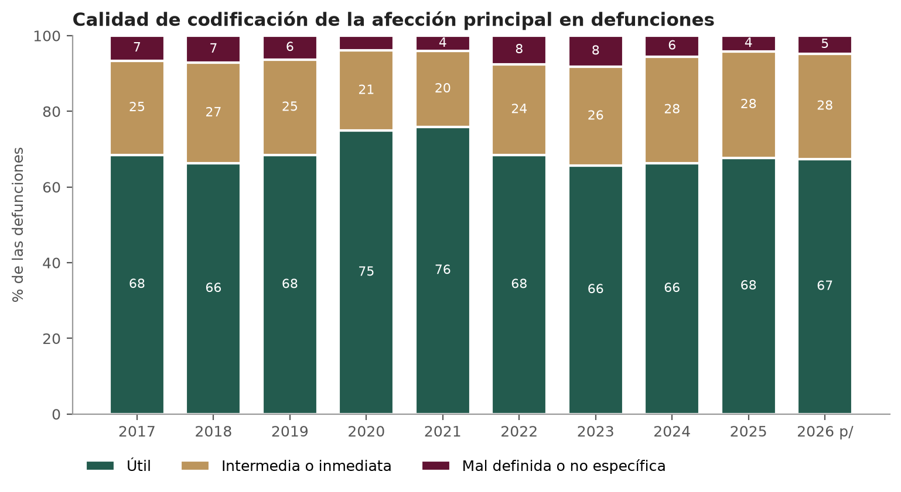
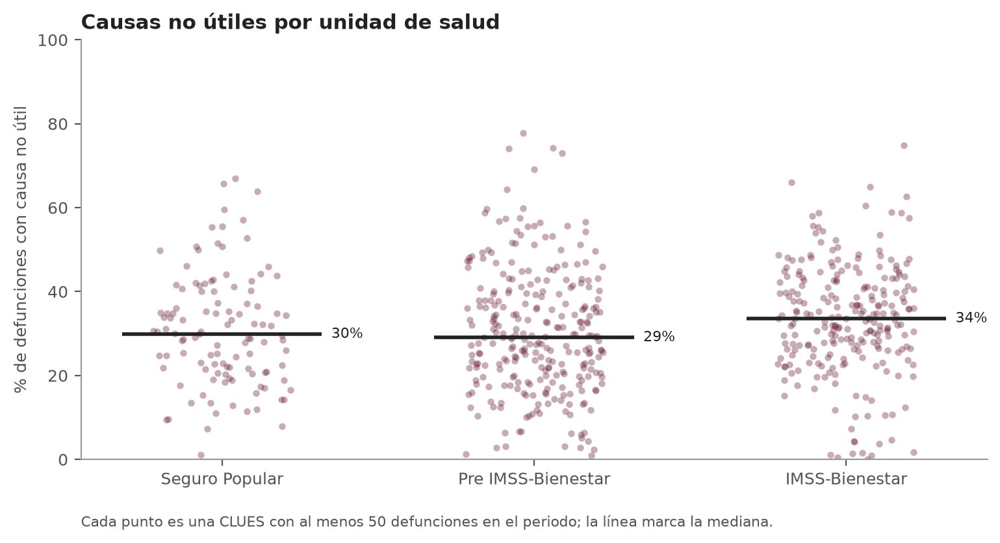
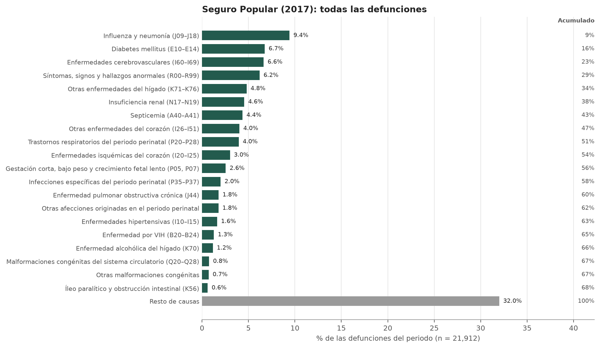
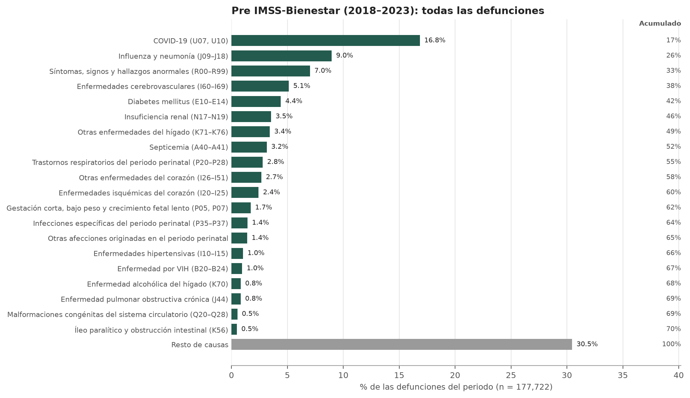
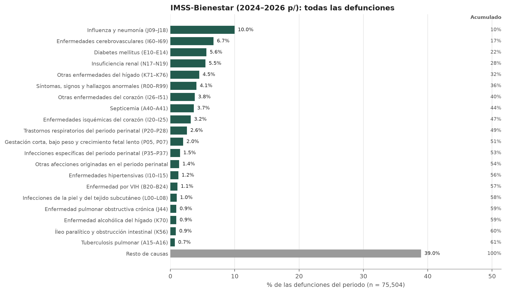
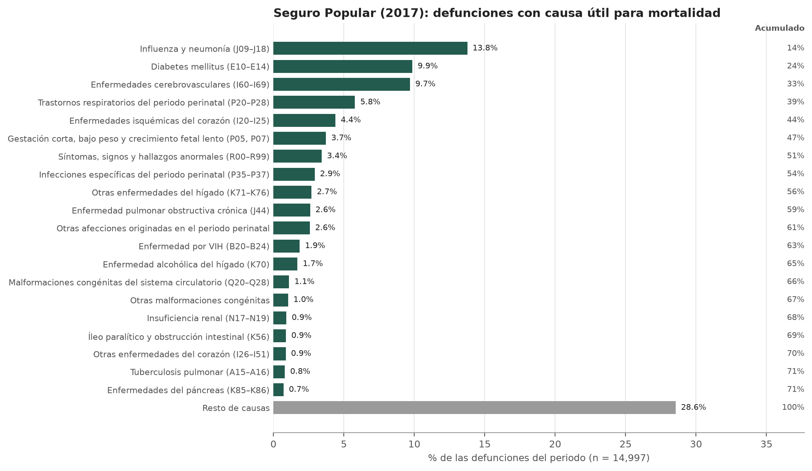
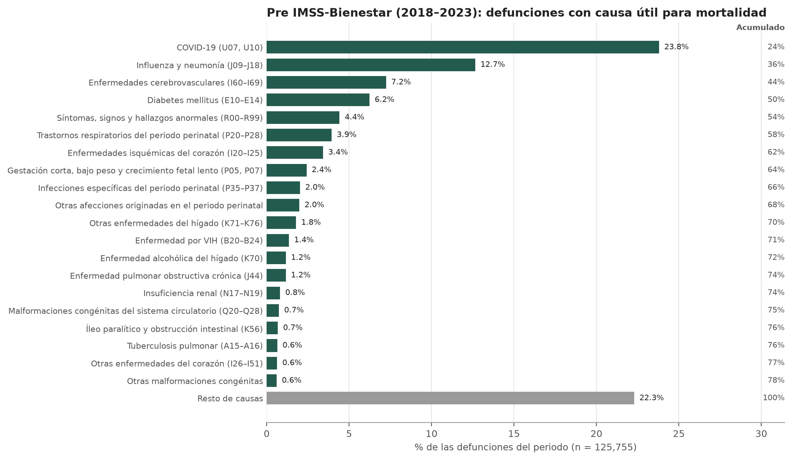
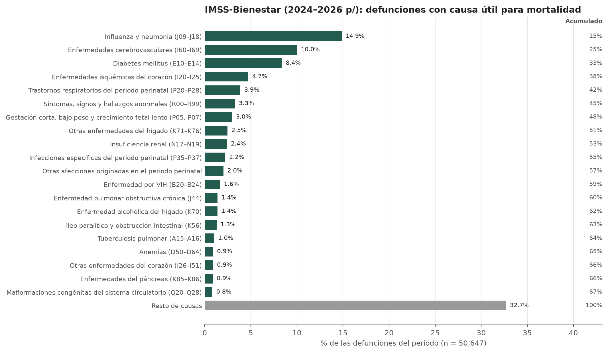
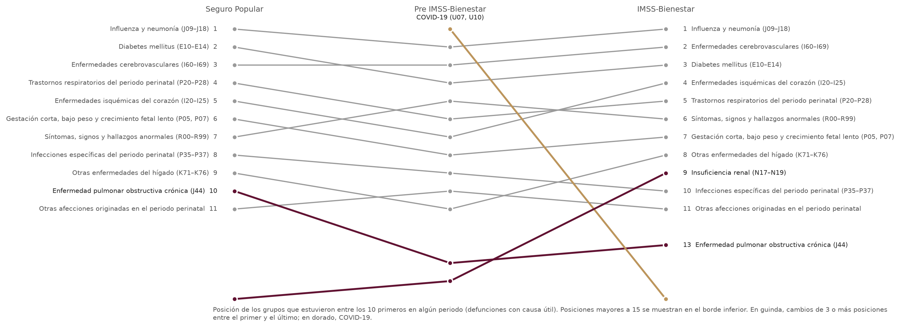
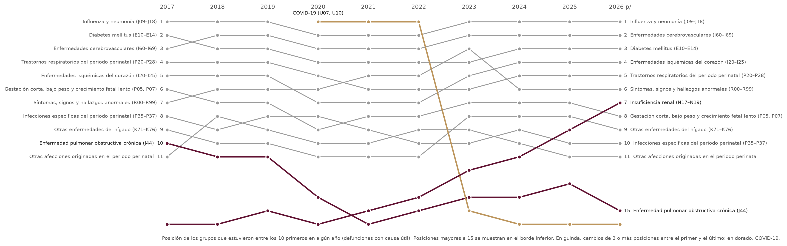

Datos de unidades de salud del IMSS Bienestar
Análisis de causas de defunción en unidades de segundo nivel, 2017-2026
19 de octubre de 2026
Luis
M. González

Causas de defunción
Se analizan los egresos hospitalarios con motivo de
egreso defunción (motegre = '5') de la base
de Egresos Hospitalarios (Secretaría de Salud - DGIS, 05 de
octubre de 2026), tomando la afección
principal (afecprin) como causa de la
defunción.
Universo y condiciones
Se incluyen las unidades de segundo nivel de
IMSS-BIENESTAR con las mismas condiciones que
sql/defunciones/afecciones_anno.sql:
cat_clues.institucion_id = 'IMB'
AND cat_clues.nivel_atencion_id = '2'
AND cat_clues.clues NOT IN ('MCIMB012440', 'MCIMB012452', 'MCIMB012464', 'MCIMB012283')
AND egresos.servicioegre NOT IN ('403', '404', '405')
AND egresos.servicioingre NOT IN ('403', '404', '405')
AND cie_10_afeccion.nombre NOT LIKE ('%PARTO%')Periodos
Los periodos corresponden al modelo de atención vigente: Seguro Popular (2017), Pre IMSS-Bienestar (2018–2023) e IMSS-Bienestar (2024–2026). El periodo Pre IMSS-Bienestar incluye la pandemia de COVID-19 (2020–2021). El año 2026 es preliminar (p/) y su información no cubre el año completo.
| Periodo | Años | CLUES | Egresos | Defunciones | Letalidad (%) | Defunciones por año |
|---|---|---|---|---|---|---|
| Seguro Popular | 2017 | 437 | 555,946 | 21,912 | 3.94 | 21,912 |
| Pre IMSS-Bienestar | 2018–2023 | 527 | 3,739,314 | 177,722 | 4.75 | 29,620 |
| IMSS-Bienestar | 2024–2026 | 556 | 2,041,253 | 75,504 | 3.70 | 25,168 |
Las defunciones por año del periodo IMSS-Bienestar se subestiman porque 2026 no está completo (último egreso: 1 de octubre de 2026).
Calidad de codificación de la causa de defunción
La variable causa_type del catálogo
CIE-10 clasifica cada código según su utilidad para la
estadística de mortalidad. Se diseñó para la
causa básica del certificado de
defunción, mientras que en egresos se
registra la afección principal del
egreso; por ello se usa aquí como indicador de la
especificidad del diagnóstico registrado, no como
criterio de exclusión.
De 275,138 defunciones, 83,739 (30.4 %) tienen como afección principal un código no útil para mortalidad.

| Año | Defunciones | % útil | % intermedia o inmediata | % mal definida o no específica |
|---|---|---|---|---|
| 2017 | 21,912 | 68.4 | 25.0 | 6.6 |
| 2018 | 22,761 | 66.3 | 26.6 | 7.2 |
| 2019 | 24,032 | 68.4 | 25.3 | 6.3 |
| 2020 | 35,015 | 74.9 | 21.2 | 3.9 |
| 2021 | 42,276 | 75.8 | 20.1 | 4.1 |
| 2022 | 27,051 | 68.4 | 24.1 | 7.5 |
| 2023 | 26,587 | 65.7 | 26.1 | 8.2 |
| 2024 | 27,499 | 66.3 | 28.2 | 5.5 |
| 2025 | 27,282 | 67.6 | 28.2 | 4.2 |
| 2026 p/ | 20,723 | 67.4 | 27.9 | 4.7 |
Variación entre unidades de salud

| Periodo | CLUES | P25 | Mediana | P75 | Máximo |
|---|---|---|---|---|---|
| Seguro Popular | 113 | 20.9 | 29.9 | 40.0 | 67.0 |
| Pre IMSS-Bienestar | 274 | 19.9 | 29.1 | 39.7 | 77.7 |
| IMSS-Bienestar | 242 | 26.3 | 33.6 | 42.0 | 74.9 |
CLUES con mayor proporción de causas no útiles (IMSS-Bienestar)
Unidades con al menos 100 defunciones en el periodo.
| Entidad | CLUES | Unidad | Defunciones IMSS-Bienestar | % no útil IMSS-Bienestar | % no útil Seguro Popular |
|---|---|---|---|---|---|
| MÉXICO | MCIMB002565 | ZOQUIAPAN DR. PEDRO LÓPEZ | 259 | 74.9 | 33.3 |
| MÉXICO | MCIMB001486 | H.G. JOSÉ VICENTE VILLADA | 535 | 66.0 | 65.8 |
| MÉXICO | MCIMB002640 | HOSPITAL GENERAL IXTLAHUACA VALENTIN GÓMEZ FARÍAS | 215 | 60.5 | 64.3 |
| HIDALGO | HGIMB004795 | HOSPITAL INTEGRAL DE TLANCHINOL | 136 | 58.8 | 34.6 |
| VERACRUZ | VZIMB007365 | HOSPITAL GENERAL DE BOCA DEL RIO | 284 | 58.8 | 50.0 |
| CIUDAD DE MÉXICO | DFIMB002435 | HOSPITAL GENERAL DE CUAJIMALPA | 184 | 57.6 | — |
| TABASCO | TCIMB003586 | HOSPITAL GENERAL DE TENOSIQUE | 125 | 54.4 | 38.1 |
| MÉXICO | MCIMB000226 | TEPEXPAN DR. GUSTAVO BAZ PRADA | 161 | 54.0 | 43.8 |
| MÉXICO | MCIMB011945 | H.G. TEXCOCO GUADALUPE VICTORIA BICENTENARIO | 542 | 52.2 | 25.6 |
| TABASCO | TCIMB005266 | HOSPITAL GENERAL DR. DESIDERIO G. ROSADO CARBAJAL | 452 | 51.8 | 33.3 |
| VERACRUZ | VZIMB001000 | HOSPITAL GENERAL COSAMALOAPAN DR. VÍCTOR MANUEL PITALUA GONZÁLEZ | 184 | 50.5 | 28.0 |
| MÉXICO | MCIMB003743 | H.G. DR. MAXIMILIANO RUÍZ CASTAÑEDA | 770 | 49.9 | 41.5 |
| HIDALGO | HGIMB000151 | HOSPITAL GENERAL ACTOPAN | 135 | 48.9 | 29.6 |
| SINALOA | SLIMB003053 | HOSPITAL GENERAL ESCUINAPA | 240 | 48.8 | 45.9 |
| CIUDAD DE MÉXICO | DFIMB002674 | HOSPITAL GENERAL AJUSCO MEDIO | 419 | 48.7 | 19.3 |
Códigos no útiles más frecuentes
Defunciones por periodo; el total incluye los periodos de transición y el preliminar.
| Clave | Afección | Tipo | Seguro Popular | Pre IMSS-Bienestar | IMSS-Bienestar | Total |
|---|---|---|---|---|---|---|
| A419 | SEPSIS, NO ESPECIFICADA | Causas intermedias | 913 | 5,228 | 2,319 | 8,460 |
| J960 | INSUFICIENCIA RESPIRATORIA AGUDA | Causas inmediatas | 269 | 5,541 | 2,207 | 8,017 |
| N189 | ENFERMEDAD RENAL CRÓNICA, NO ESPECIFICADA | Causas intermedias | 652 | 3,899 | 2,243 | 6,794 |
| E872 | ACIDOSIS | Causas intermedias | 486 | 3,103 | 1,914 | 5,503 |
| K729 | INSUFICIENCIA HEPÁTICA, NO ESPECIFICADA | Causas intermedias | 490 | 2,780 | 1,238 | 4,508 |
| J80X | SÍNDROME DE DIFICULTAD RESPIRATORIA DEL ADULTO | Causas intermedias | 103 | 3,309 | 795 | 4,207 |
| J969 | INSUFICIENCIA RESPIRATORIA, NO ESPECIFICADA | Causas inmediatas | 193 | 2,874 | 964 | 4,031 |
| K922 | HEMORRAGIA GASTROINTESTINAL, NO ESPECIFICADA | Causas intermedias | 285 | 1,707 | 1,133 | 3,125 |
| R571 | CHOQUE HIPOVOLÉMICO | Causas mal definidas | 236 | 2,130 | 498 | 2,864 |
| I509 | INSUFICIENCIA CARDÍACA, NO ESPECIFICADA | Causas intermedias | 230 | 1,205 | 788 | 2,223 |
| I500 | INSUFICIENCIA CARDÍACA CONGESTIVA | Causas intermedias | 267 | 1,197 | 748 | 2,212 |
| I10X | HIPERTENSIÓN ESENCIAL (PRIMARIA) | Causas poco probalbes de ser causa basica | 260 | 1,253 | 607 | 2,120 |
| R570 | CHOQUE CARDIOGÉNICO | Causas mal definidas | 182 | 1,346 | 347 | 1,875 |
| K920 | HEMATEMESIS | Causas intermedias | 84 | 798 | 739 | 1,621 |
| K721 | INSUFICIENCIA HEPÁTICA CRÓNICA | Causas intermedias | 94 | 633 | 560 | 1,287 |
Causas de defunción por periodo
Las causas se agrupan con la lista de principales
causas de mortalidad (prinmorta del
catálogo CIE-10). El grupo residual (clave 999, códigos
que no pertenecen a ningún grupo de la lista) no se
ordena: se suma en “Resto de causas” junto con los
grupos fuera de los primeros 20. Los porcentajes y el
acumulado se calculan sobre el total de defunciones del
periodo.
Cada periodo se presenta en dos versiones: con todas las defunciones y solo con las de causa útil para mortalidad. Si el orden de los grupos se mantiene entre ambas, el resultado no depende de los códigos poco específicos.
Pareto: todas las defunciones



Grupos entre los 10 primeros en algún periodo
Posición (porcentaje de las defunciones del periodo).
| Grupo | Seguro Popular | Pre IMSS-Bienestar | IMSS-Bienestar |
|---|---|---|---|
| Influenza y neumonía (J09–J18) | 1 (9.4%) | 2 (9.0%) | 1 (10.0%) |
| Enfermedades cerebrovasculares (I60–I69) | 3 (6.6%) | 4 (5.1%) | 2 (6.7%) |
| Diabetes mellitus (E10–E14) | 2 (6.7%) | 5 (4.4%) | 3 (5.6%) |
| Insuficiencia renal (N17–N19) | 6 (4.6%) | 6 (3.5%) | 4 (5.5%) |
| Otras enfermedades del hígado (K71–K76) | 5 (4.8%) | 7 (3.4%) | 5 (4.5%) |
| Síntomas, signos y hallazgos anormales (R00–R99) | 4 (6.2%) | 3 (7.0%) | 6 (4.1%) |
| Otras enfermedades del corazón (I26–I51) | 8 (4.0%) | 10 (2.7%) | 7 (3.8%) |
| Septicemia (A40–A41) | 7 (4.4%) | 8 (3.2%) | 8 (3.7%) |
| Enfermedades isquémicas del corazón (I20–I25) | 10 (3.0%) | 11 (2.4%) | 9 (3.2%) |
| Trastornos respiratorios del periodo perinatal (P20–P28) | 9 (4.0%) | 9 (2.8%) | 10 (2.6%) |
| COVID-19 (U07, U10) | — | 1 (16.8%) | 51 (0.1%) |
Pareto: defunciones con causa útil para mortalidad



Grupos entre los 10 primeros en algún periodo
Posición (porcentaje de las defunciones del periodo).
| Grupo | Seguro Popular | Pre IMSS-Bienestar | IMSS-Bienestar |
|---|---|---|---|
| Influenza y neumonía (J09–J18) | 1 (13.8%) | 2 (12.7%) | 1 (14.9%) |
| Enfermedades cerebrovasculares (I60–I69) | 3 (9.7%) | 3 (7.2%) | 2 (10.0%) |
| Diabetes mellitus (E10–E14) | 2 (9.9%) | 4 (6.2%) | 3 (8.4%) |
| Enfermedades isquémicas del corazón (I20–I25) | 5 (4.4%) | 7 (3.4%) | 4 (4.7%) |
| Trastornos respiratorios del periodo perinatal (P20–P28) | 4 (5.8%) | 6 (3.9%) | 5 (3.9%) |
| Síntomas, signos y hallazgos anormales (R00–R99) | 7 (3.4%) | 5 (4.4%) | 6 (3.3%) |
| Gestación corta, bajo peso y crecimiento fetal lento (P05, P07) | 6 (3.7%) | 8 (2.4%) | 7 (3.0%) |
| Otras enfermedades del hígado (K71–K76) | 9 (2.7%) | 11 (1.8%) | 8 (2.5%) |
| Insuficiencia renal (N17–N19) | 16 (0.9%) | 15 (0.8%) | 9 (2.4%) |
| Infecciones específicas del periodo perinatal (P35–P37) | 8 (2.9%) | 9 (2.0%) | 10 (2.2%) |
| Otras afecciones originadas en el periodo perinatal | 11 (2.6%) | 10 (2.0%) | 11 (2.0%) |
| Enfermedad pulmonar obstructiva crónica (J44) | 10 (2.6%) | 14 (1.2%) | 13 (1.4%) |
| COVID-19 (U07, U10) | — | 1 (23.8%) | 49 (0.2%) |
Cambio de posición entre periodos

Cambio de posición por año

Letalidad hospitalaria por grupo de causa
Los conteos de defunciones dependen del volumen de egresos, que cayó en 2020–2021. La letalidad (defunciones / egresos con esa afección principal) corrige ese efecto. La razón de letalidad (RL) compara cada periodo con Seguro Popular; un intervalo que no incluye 1 indica un cambio estadísticamente significativo. Se muestran los 15 grupos con más defunciones (todas las defunciones).
| Grupo | Letalidad Seguro Popular (%) | Letalidad Pre IMSS-Bienestar (%) | Letalidad IMSS-Bienestar (%) | RL Pre IMSS-Bienestar vs. Seguro Popular (IC 95 %) | RL IMSS-Bienestar vs. Seguro Popular (IC 95 %) |
|---|---|---|---|---|---|
| COVID-19 (U07, U10) | — | 42.76 | 11.11 | — | — |
| Influenza y neumonía (J09–J18) | 11.37 | 16.19 | 13.41 | 1.42 (1.36–1.49) | 1.18 (1.13–1.23) |
| Síntomas, signos y hallazgos anormales (R00–R99) | 8.33 | 13.25 | 15.73 | 1.59 (1.51–1.68) | 1.89 (1.78–2.01) |
| Enfermedades cerebrovasculares (I60–I69) | 17.34 | 18.49 | 17.22 | 1.07 (1.01–1.12) | 0.99 (0.94–1.05) |
| Diabetes mellitus (E10–E14) | 4.66 | 4.61 | 4.51 | 0.99 (0.94–1.05) | 0.97 (0.91–1.03) |
| Insuficiencia renal (N17–N19) | 3.96 | 2.15 | 2.93 | 0.54 (0.51–0.58) | 0.74 (0.69–0.79) |
| Otras enfermedades del hígado (K71–K76) | 14.95 | 16.14 | 14.81 | 1.08 (1.02–1.15) | 0.99 (0.93–1.06) |
| Septicemia (A40–A41) | 58.12 | 57.25 | 45.29 | 0.99 (0.94–1.03) | 0.78 (0.74–0.82) |
| Otras enfermedades del corazón (I26–I51) | 13.76 | 14.42 | 12.48 | 1.05 (0.98–1.12) | 0.91 (0.85–0.97) |
| Trastornos respiratorios del periodo perinatal (P20–P28) | 5.60 | 5.54 | 4.50 | 0.99 (0.92–1.06) | 0.80 (0.74–0.87) |
| Enfermedades isquémicas del corazón (I20–I25) | 17.18 | 19.68 | 16.44 | 1.15 (1.06–1.23) | 0.96 (0.88–1.04) |
| Gestación corta, bajo peso y crecimiento fetal lento (P05, P07) | 7.38 | 7.59 | 7.72 | 1.03 (0.94–1.12) | 1.05 (0.95–1.15) |
| Infecciones específicas del periodo perinatal (P35–P37) | 6.10 | 6.16 | 6.60 | 1.01 (0.92–1.12) | 1.08 (0.97–1.20) |
| Otras afecciones originadas en el periodo perinatal | 2.83 | 3.28 | 3.19 | 1.16 (1.04–1.29) | 1.13 (1.01–1.27) |
| Enfermedades hipertensivas (I10–I15) | 5.26 | 5.39 | 4.64 | 1.02 (0.92–1.14) | 0.88 (0.78–0.99) |